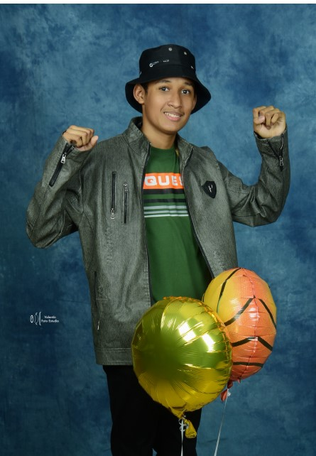

Soy Roberto Moreno, nací el 11 de noviembre del 2007 por lo que tengo 16 años, soy
de Panamá, vivo en San Miguelito con mis padres y mi hermano menor, tengo un perro
llamado Morgan.
De pequeño baile en conjuntos típicos de mi escuela, en mi iglesia donde conocí al
Papa Francisco el 2019.
Cuando tenía 8 años fui operado de la apéndice y estuve internado en el hospital 1
semana, justo esa semana era mi cumpleaños así lo pasé en el hospital
recuperándome.
Estuve en la misma escuela desde que tuve en kinder hasta noveno grado, por lo que
tengo varios amigos que estudiaron conmigo desde pequeño como a Diego.
Mis mayores sueños actualmente tener mi propia compañía o empresa, ser un
profesional en mi carrera, tener una casa en la playa, conocer mucho lugares en el
mundo enorgullecer a mis padres.
Tengo un perro que se llama Morgan, he estado con él durante 5 años, me ayudó
mucho su compañía en el tiempo de la pandemia para no sentirme solo o desanimado.
En ese tiempo jugué muchos videojuegos, vi varias series y películas en casa con mi
familia.
Tengo una familia muy grande en Chiriquí por parte de mi mamá, por lo que siempre
intentamos visitarlos 1 vez al año.
Me gusta viajar, leer, ejercitarme en el gimnasio, escuchar rock, hip-hop, ir a la playa o
de campamento, hacer recetas de comidas, jugar baloncesto, ping pong, fútbol,
ajedrez y de vez en cuando jugar videojuegos.